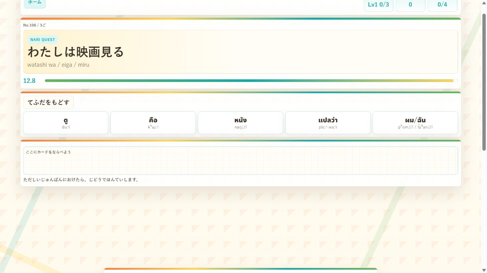
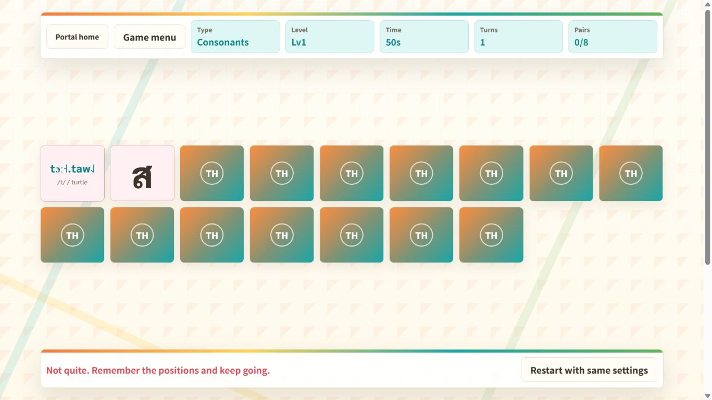
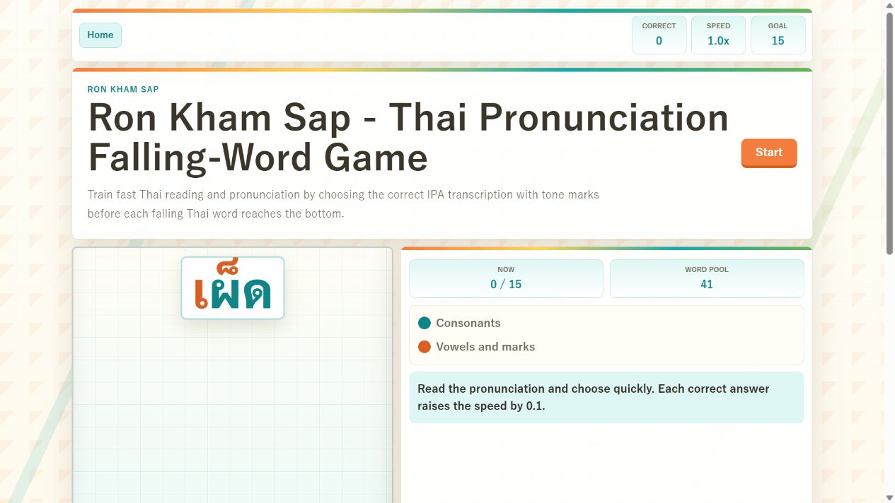
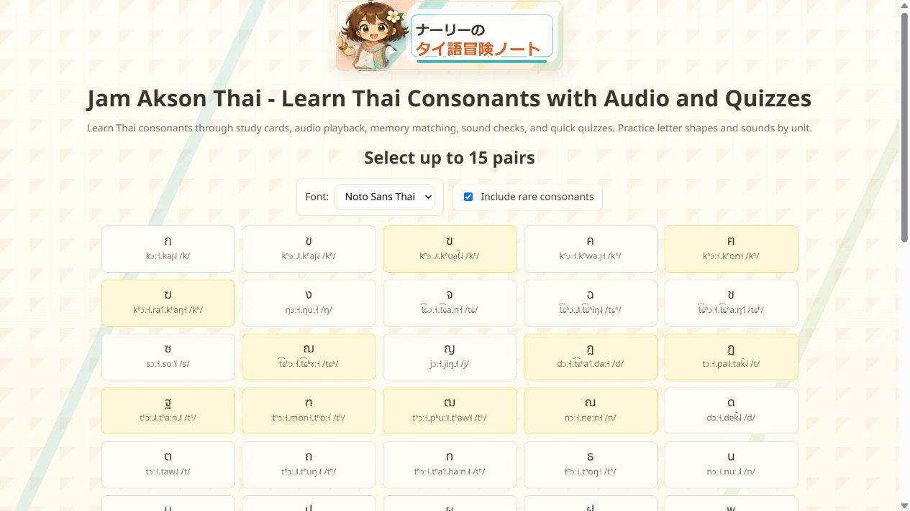

เติมตัวอักษรไทย: eight random fill-in questions with English meanings. Game titles now use descriptive Thai names.
Nari's Thai Adventure
Nari's Thai Adventure Notes
Practice Thai word order, script, pronunciation, and vocabulary through interactive learning games. Choose a quest and learn with Nari at your own pace.
Sawatdee! Which island should we explore today?

แ＿วcat → ม
เติมตัวอักษรไทย - タイ文字の穴うめ練習
既習の短い単語で、子音・語頭の母音・声調記号・語末の母音を4レベルで練習。毎回ランダムな8問に挑戦し、回答後に発音を確認できます。
Thai letters8 questionsJapanese UI
Play this game
🐱🐱🐱mɛːw˧ saːm˩˩˦ tua̯˧
ลักษณนามภาษาไทย - Emoji Quest
Count the emojis and build an answer by selecting a noun, number, and classifier from independently shuffled word choices. Practice ten Thai classifiers with explanations and a review of missed questions.
ClassifiersEmojiWord choicesEnglish UI
Play this game

เรียงคำเป็นประโยค - Thai Word Order Game
Practice Thai word order by arranging Thai and Japanese word cards side by side. Compare sentence structure and modifier placement through exercises designed for Japanese-speaking Thai learners.
Word order
Japanese
Thai reading
Japanese UI
Play this game

จับคู่ตัวอักษรไทย - Thai Alphabet Memory Game
Learn Thai letters with an interactive memory matching game. Pair Thai consonants and vowels with their IPA transcription with tone marks and progress through increasingly challenging levels.
Thai letters
Memory
Levels
IPA
Play this game
หมา
dog
ฝึกคำศัพท์ภาษาไทย - Thai Vocabulary Quiz and Review
Build practical Thai vocabulary from lesson notes with six-choice quizzes, Thai script, IPA transcription with tone marks, search, bookmarks, and a dedicated review mode.
Vocabulary
Six choices
Review
IPA
Play this game

เกมคำศัพท์ตกจากฟ้า - Thai Pronunciation Falling-Word Game
Train fast Thai reading and pronunciation by choosing the correct IPA transcription with tone marks before each falling Thai word reaches the bottom.
Thai script
Pronunciation
Reading speed
IPA
Play this game

ฝึกพยัญชนะไทย - Learn Thai Consonants with Audio and Quizzes
Learn Thai consonants through study cards, audio playback, memory matching, sound checks, and quick quizzes. Practice letter shapes and sounds by unit.
Thai consonants
Sound
Letters
Quiz
Play this game
Latest updates
Latest updates
All six games now use IPA with tone marks. Read the guide and dictionary sources.
Added an English-language emoji quest with separately shuffled nouns, numbers, and ten Thai classifiers.
Added a dedicated Updates page, SEO metadata, searchable game names, and clearer game descriptions.
Updated Thai script display options by hiding romanization in Thai script mode.
Updated the home page and เกมคำศัพท์ตกจากฟ้า UI to English.